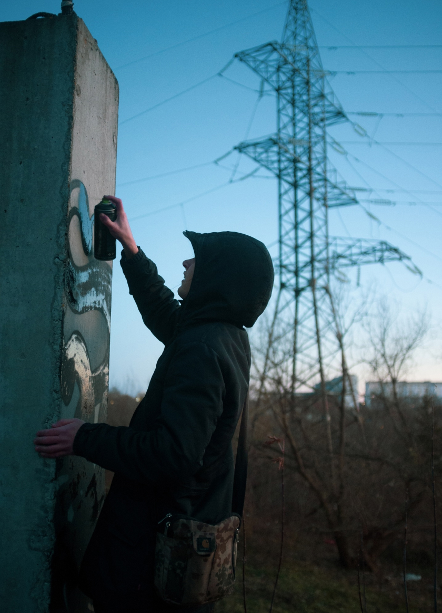

Новости
Керченская 20
«Падение II»
Работа Рустама Qbic на фестивале «Место»
Нижневолжская наб. 21
«Крокодил 2.0»
Легендарный крокодил вернулся на опоры
Канавинского моста
Горького 4А
Escape Лев Крайс
Монументальная работа художника Льва Кайса о поиске выхода из бесконечного круговорота информации. Художник оставил комментарий к жизни в наш цифровой век.
Загрузить ещё
Популярное

Ошарская 98
В заброшенном здании появилась аллея «теней»
Волжская набережная
На набережной художники провели граффити-джем
Рождественская 6Б
В память о художнике Zoom воссоздали одну из его работ
Нижегородский район
Новый маршрут
Был составлен прогулочный маршрут по верхней части города. На нём вы познакомитесь с объектами фестиваля «Место» и других проектов разных лет.
Карта города
С помощью интерактивной карты вы можете включить граффити в привычные для вас прогулки. Встречайте арт-объекты даже по пути в магазин.